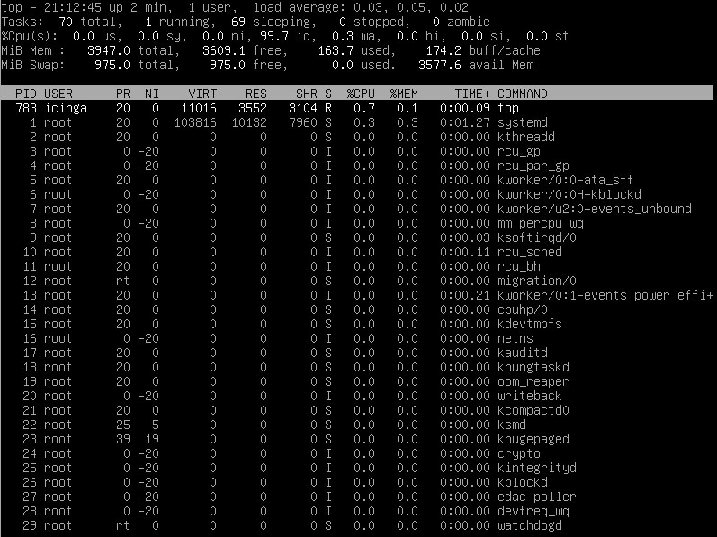

What You'll Learn
Every computer system benefits from proper administration and monitoring. A computer operates more quickly if few CPU-intensive processes are running at the same time. Consequently, it makes sense that administrators check the CPU usage on a regular basis to identify programs that unnecessarly burden the system.
There are plenty of command line utilities created for this purpose. This codelab will introduce you to some of the most helpful applications, how to install and use them.
Man-Pages
The man is a short term for manual page and acts as an interface to view the reference manual of a command.
Syntax of man:
man [option(s)] keyword(s)
For example, if you want top find out more about the command ps and how to use it, just open a shell and type:
man ps
This command will display all the information about ps.
PS(1) User Commands PS(1)
NAME
ps - report a snapshot of the current processes.
SYNOPSIS
ps [options]
DESCRIPTION
ps displays information about a selection of the active processes. If
you want a repetitive update of the selection and the displayed
information, use top(1) instead.
...
...
Root privileges
Installing additional software from Debian repositories requires root privileges. There are three ways how you get root access.
- Log in as root (instead with the user account)
Debian GNU/Linux 11 icinga tty1 icinga login: _ - When logged in as regular user, open the shell and run the following command:
su - - When you are logged in as regular user and if you are a member of the sudo group, then open the shell and run the following command:
sudo -s
Man-Pages
nproc
The nproc command displays the number of available processing units. The command is a built-in command in a Linux system.
Open a shell and run nproc with the following option:
nproc --all
The output should look like this:
4
lscpu
On most Linux distributions, you can also use the lscpu command. It displays not only the number of processors but also the architecture, model name, speed, much more.
Open a shell and run the following command:
lscpu
The output will probably be very different from yours:
Architecture: x86_64
CPU op-mode(s): 32-bit, 64-bit
Byte Order: Little Endian
Address sizes: 39 bits physical, 48 bits virtual
CPU(s): 4
On-line CPU(s) list: 0-3
Thread(s) per core: 2
Core(s) per socket: 2
Socket(s): 1
NUMA node(s): 1
Vendor ID: GenuineIntel
CPU family: 6
Model: 60
Model name: Intel(R) Core(TM) i3-4160T CPU @ 3.10GHz
Stepping: 3
CPU MHz: 1696.113
CPU max MHz: 3100.0000
CPU min MHz: 800.0000
BogoMIPS: 6185.65
Virtualization: VT-x
L1d cache: 32K
L1i cache: 32K
L2 cache: 256K
L3 cache: 3072K
NUMA node0 CPU(s): 0-3
Flags: fpu vme de pse tsc msr pae mce cx8 apic sep mtrr pge mca cmov pat pse36 clflush dts acpi mmx fxsr sse sse2 ss ht tm pbe syscall nx pdpe1gb rdtscp lm constant_tsc arch_perfmon pebs bts rep_good nopl xtopology nonstop_tsc cpuid aperfmperf pni pclmulqdq dtes64 monitor ds_cpl vmx est tm2 ssse3 sdbg fma cx16 xtpr pdcm pcid sse4_1 sse4_2 movbe popcnt tsc_deadline_timer aes xsave avx f16c rdrand lahf_lm abm cpuid_fault epb invpcid_single pti ssbd ibrs ibpb stibp tpr_shadow vnmi flexpriority ept vpid ept_ad fsgsbase tsc_adjust bmi1 avx2 smep bmi2 erms invpcid xsaveopt dtherm arat pln pts md_clear flush_l1d
uptime
The command uptime shows the basic information. The tool requires few system resources only and can be helpful when a system is responding slow.
Open a shell and run the command as follows:
uptime
The output may look like this:
17:58:21 up 1 day, 22:38, 1 user, load average: 0.54, 0.51, 0.69
The command shows :
- the system time at the moment the command was run (here: 5.58pm)
- how long the server had been running (here: 1 day)
- how many connections users had to the machine (here: 1 user)
- the CPU load average for the past one, five, and fifteen minutes (here: 0.54, 0.51, 0.69)
top
One of the most common tools for checking the CPU utilization is top.
Like uptime, the command top displays the CPU load averages. In addition, the command provides real-time CPU usage information as well as other performance metrics. Furthermore, top stays in the foreground and refreshes at regular intervals.
Run the top command as follows:
top
The output will probably be very different from yours: 
The first five lines (also called the Header Block) provide a summary about the processes on the server. The Header Block is followed by a table (the Process Table) with information about each individual process.
htop
This tool is another interactive real-time process monitoring application. It has numerous nice user-friendly features which are not availble under the top command.
Unfortunately, the program is not installed by default. Run the following command to install htop with the privileges of the root account:
apt update; apt install htop
After successful installation, run the htop command as follows:
htop
The output will probably be very different from yours: 
The top section is more easier to read and the bottom section is better organized.
mpstat
The tool mpstat is a command that is used to report processor related statistics. It displays the statistics of the CPU usage of the system and information about CPU utilization. It initializes the first processor with CPU 0, the second one with CPU 1, and so on.
The tool mpstat is part of the software package sysstat. Like htop, the program is not installed by default. Run the following command to install the systat package with the privileges of the root account:
apt update; apt install sysstat
After successful installation, run the mpstat command as follows:
mpstat
The output will probably be very different from yours:
Linux 5.10.0-8-amd64 (debian) 07/21/2021 _x86_64_ (2 CPU)
10:13:59 AM CPU %usr %nice %sys %iowait %irq %soft %steal %guest %gnice %idle
10:13:59 AM all 7.67 0.06 1.82 0.46 0.00 0.21 0.00 0.00 0.00 89.77
Next, to display processor numbers to all CPUs, run the command with the following flags:
mpstat -P ALL
Again, the output will probably be very different from yours:
Linux 5.10.0-8-amd64 (debian) 07/21/2021 _x86_64_ (2 CPU)
10:15:43 AM CPU %usr %nice %sys %iowait %irq %soft %steal %guest %gnice %idle
10:15:43 AM all 7.14 0.05 1.64 0.40 0.00 0.18 0.00 0.00 0.00 90.59
10:15:43 AM 0 6.96 0.04 1.70 0.38 0.00 0.21 0.00 0.00 0.00 90.70
10:15:43 AM 1 7.33 0.06 1.57 0.41 0.00 0.16 0.00 0.00 0.00 90.47
Next, to get all information, run the command with the following flag:
mpstat -A
This will display each and every detail of CPU usage.:
Linux 5.10.0-8-amd64 (debian) 07/21/2021 _x86_64_ (2 CPU)
10:18:41 AM CPU %usr %nice %sys %iowait %irq %soft %steal %guest %gnice %idle
10:18:41 AM all 6.45 0.04 1.39 0.32 0.00 0.16 0.00 0.00 0.00 91.65
10:18:41 AM 0 6.33 0.04 1.44 0.30 0.00 0.17 0.00 0.00 0.00 91.72
10:18:41 AM 1 6.57 0.05 1.33 0.33 0.00 0.15 0.00 0.00 0.00 91.57
10:18:41 AM NODE %usr %nice %sys %iowait %irq %soft %steal %guest %gnice %idle
10:18:41 AM all 6.45 0.04 1.39 0.32 0.00 0.16 0.00 0.00 0.00 91.65
10:18:41 AM 0 6.45 0.04 1.39 0.32 0.00 0.16 0.00 0.00 0.00 91.65
10:18:41 AM CPU intr/s
10:18:41 AM all 684.45
10:18:41 AM 0 85.41
10:18:41 AM 1 532.59
10:18:41 AM CPU 0/s 1/s 8/s 9/s 12/s 14/s 15/s 18/s 19/s 20/s 21/s 22/s NMI/s LOC/s SPU/s PMI/s IWI/s RTR/s RES/s CAL/s TLB/s TRM/s THR/s DFR/s MCE/s MCP/s ERR/s MIS/s PIN/s NPI/s PIW/s
10:18:41 PM 0 0.03 0.00 0.00 0.00 0.32 0.00 1.16 3.32 0.00 0.00 26.69 0.00 0.00 123.81 0.00 0.00 0.00 0.00 0.69 64.39 2.54 0.00 0.00 0.00 0.00 0.00 0.00 0.01 0.00 0.00 0.00
10:18:41 PM 1 0.00 0.59 0.00 0.00 0.00 0.00 0.00 0.00 0.91 3.29 0.00 0.03 0.00 378.77 0.00 0.00 0.00 0.00 0.68 79.76 3.14 0.00 0.00 0.00 0.00 0.00 0.00 0.00 0.00 0.00 0.00
10:18:41 AM CPU HI/s TIMER/s NET_TX/s NET_RX/s BLOCK/s IRQ_POLL/s TASKLET/s SCHED/s HRTIMER/s RCU/s
10:18:41 AM 0 0.00 14.51 0.00 0.06 13.04 0.00 0.04 26.58 0.00 31.18
10:18:41 AM 1 0.00 247.50 0.20 0.93 12.66 0.00 0.60 233.72 0.00 36.96
Finally, to display CPU utilization by a specific processor, run the command with the following flags:
Next, to get all information, run the command with the following flag:
mpstat -P 1
This will display CPU usage of the 1st processor:
Linux 5.10.0-8-amd64 (debian) 07/21/2021 _x86_64_ (2 CPU)
10:25:23 AM CPU %usr %nice %sys %iowait %irq %soft %steal %guest %gnice %idle
10:25:23 AM 1 5.89 0.03 1.03 0.24 0.00 0.13 0.00 0.00 0.00 92.68